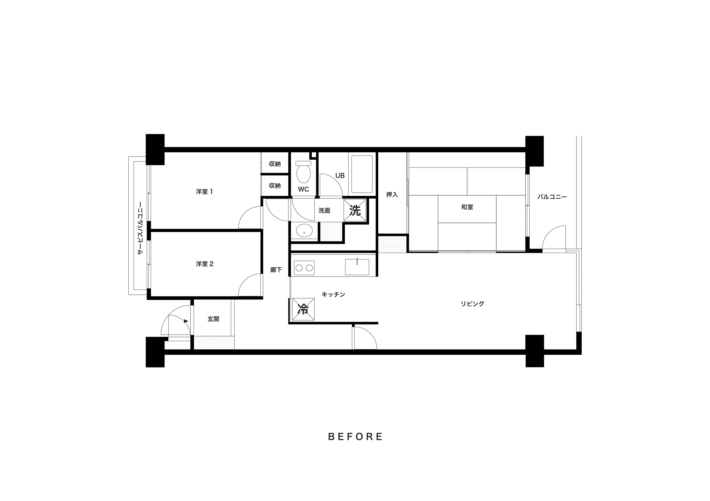

{{#extend "pages"}}
  {{#content "main"}}
    <main class="main">

      <section class="contents">
        <h2 class="contents__title">
          HOUSE I
        </h2>
        <h3 class="contents__subtitle">
          Ota-ku,Tokyo,Japan
        </h3>

        <ul class="contents__list">
          <li class="contents__item">
            <a href="img/work/house_i/house_i_01.jpg" data-lightbox="works06">
              
            </a>
          </li>
          <li class="contents__item">
            <a href="img/work/house_i/house_i_02.jpg" data-lightbox="works06">
              
            </a>
          </li>
          <li class="contents__item">
            <a href="img/work/house_i/house_i_03.jpg" data-lightbox="works06">
              
            </a>
          </li>
          <li class="contents__item">
            <a href="img/work/house_i/house_i_04.jpg" data-lightbox="works06">
              
            </a>
          </li>
        </ul>

        <p class="contents__text">
          Data.<br>
          竣工：2023年2月<br>
          所在地：東京都大田区<br>
          用途：住宅<br>
          構造：RC造<br>
          デザイン：生田一希建築設計事務所<br>
          設計：生田一希建築設計事務所<br>
          施工：株式会社JESS<br>
          設計期間：2022.04-2022.11<br>
          施工期間：2022.12-2022.02<br>
          延床面積：74.20㎡
        </p>
      </section>
    </main>
  {{/content}}
{{/extend}}
